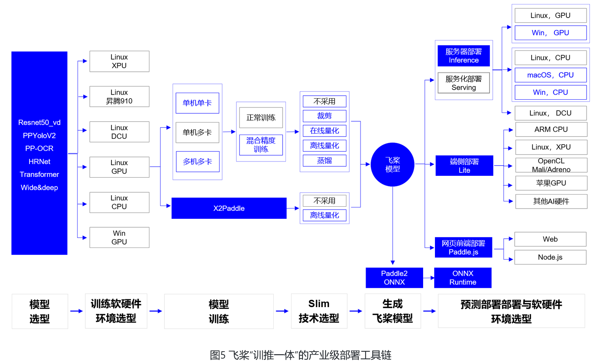
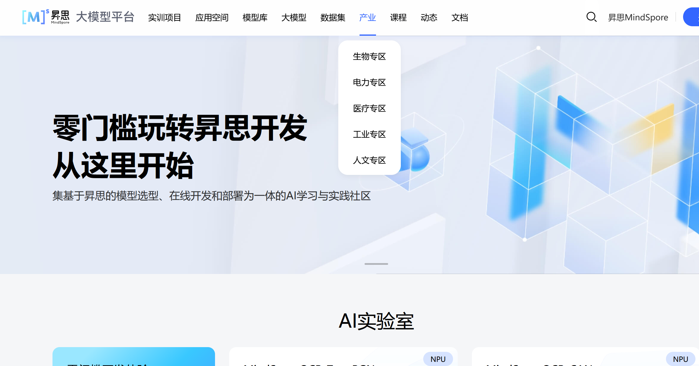

3_1_DL框架简介#
作者: ZhouLong
创建日期: 2026 年 02 月 07 日
版本: 1.0
浏览量:
深度学习框架有哪些#
当前（2026年2月），市面上常见的主流的深度学习框架有：
国外——TensorFlow，PyTorch，Keras
国内——PaddlePaddle，MindSpore
建议
建议大家先掌握好PyTorch、TensorFlow等，再掌握国内的一些框架。国内的框架目前生态仍待完善，使用有时候遇到问题不好解决。但国产框架在很多生产场景都有应用，后续可根据需求学习了解
下面是对这几种框架的详细介绍和对比：
1.1 PyTorch#
PyTorch 是 2016 年由 Facebook 人工智能研究院开发的开源深度学习框架。它发展历经 0.x、1.x、2.x 系列，不断提升性能与功能。它是目前市场上最流行的深度学习框架之一。它基于Python语言，提供了强大的GPU加速功能和动态计算图的支持。PyTorch的应用范围非常广泛，包括图像和语音识别、自然语言处理、计算机视觉、推荐系统等领域。PyTorch具有易于使用、灵活性高和代码可读性好等特点，使得它成为深度学习研究和应用的首选框架之一。
PyTorch的发展历程映射了整个深度学习框架的演进趋势。其前身Torch框架基于Lua语言，虽然提供了模块化网络、自动求导等特性，但由于Lua语言生态狭小，在Python横行的科研圈中缺乏吸引力。2016年，Facebook AI Research团队决定重写Torch框架，保留其计算图设计与模块系统，同时切换到Python平台，从而诞生了PyTorch的第一个公开版本。
2017 年：PyTorch 开源后迅速迭代，支持动态计算图（Define-by-Run），成为研究领域的首选工具。
2018 年：发布 PyTorch 1.0，整合了 Caffe2（Facebook 的另一个深度学习框架）的生产级功能，并引入 TorchScript，支持模型导出和部署。
2020 年：推出 TorchServe，简化模型部署流程，进一步向工业应用渗透。
2022 年：发布 PyTorch 2.0，引入编译优化技术（如 torch.compile），显著提升训练和推理性能。
PyTorch 的核心价值与作用
科研与创新的催化剂
动态计算图：允许研究者实时修改网络结构，尤其适合探索性任务（如新型神经网络架构、强化学习）。
易用性：与 Python 生态无缝集成，大大降低学习门槛，同时语法相对非常简洁。
社区驱动：开源社区贡献了大量前沿模型，加速了技术迭代。
工业应用的桥梁
生产部署工具链：通过 TorchScript、ONNX 导出模型，支持跨平台部署（移动端、服务器、边缘设备）。
企业级支持：Meta、特斯拉、OpenAI 等公司广泛使用 PyTorch 开发产品（如自动驾驶、ChatGPT）。
1.2 TensorFlow#
TensorFlow是一个由Google Brain团队开发的开源深度学习框架，是非常受欢迎和广泛使用的框架。使用数据流图来表示计算图，其中节点表示数学操作，边表示数据流动。使用TensorFlow可以利用GPU和分布式计算来加速训练过程。该框架有着广泛的应用场景，包括图像识别、自然语言处理、语音识别、推荐系统等。同时，TensorFlow也有着丰富的社区支持和文档资源，使其容易学习和使用。
Tensorflow有三种计算图的构建方式：静态计算图，动态计算图，以及Autograph。
TensorFlow1.0时代，采用的是静态计算图，需要先使用TensorFlow的各种算子创建计算图，再开启一个会话Session，显示执行计算图。
TensorFlow2.0时代，采用的是动态计算图，即每使用一个算子后，该算子会被动态加入到隐含的默认计算图中立即执行得到结果，而无需开启Session。
TensorFlow2 默认使用动态计算图（Eager Excution）。使用动态计算图的好处是方便调试程序，但缺点是运行效率相对会低一些。
TensorFlow的特点
可移植、跨平台性强：相同的代码和模型可以同时在服务器、PC、移动设备上运行。
良好的社区生态：TensorFlow 的官方文档几乎为所有的函数与所有的参数都进行了详细的阐述。并且很大一部分的官方教程支持中文，对于国内学习成本较低。
内置算法非常完善：在 TensorFLow 之中内嵌了我们在机器学习中能用到的绝大部分的算法。
适用工业生产：TensorFlow 内置的 Service、分布式等结构能够帮助个人和企业很方便完成模型的训练与部署。
编程扩展性好：支持市面上大多数编程语言比如：Python、C、R、Go等。
TensorFLow的缺点
TensorFlow程序的调试比较麻烦，不能深入其内部进行调试。
TensorFlow中的许多高阶 API 导致我们修改我们自己的模型有一定难度。
TensorFlow1.x 版本与 TensorFlow2.x 的差别较大，代码版本迁移比较麻烦。
1.3 Keras#
Keras最初由François Chollet开发，现在为TensorFlow官方API。Keras 是一个用 Python 编写的高级深度学习 API，以其简洁、灵活和强大的特性著称，能够运行在 JAX、TensorFlow 或 PyTorch 等底层框架之上。它旨在降低开发者的认知负荷，同时通过清晰的路径支持从简单到任意复杂的工作流，被 NASA、YouTube 和 Waymo 等组织广泛使用。
Keras 的主要特点
用户友好：Keras 提供了一个一致且简洁的API，减少了常见用例所需的代码量，同时提供清晰且有用的错误消息。
模块化和可组合：模型可以理解为由可配置构建块（如层、损失函数、优化器等）组成的有向无环图，这些构建块可以任意连接，只要数据形状匹配即可。
易于扩展：你很容易编写新的层、损失函数和开发复杂的模型，比如多输入/输出模型、共享层模型或非序列模型。
与Python兼容：Keras 没有单独的模型配置格式，所有的模型都是纯 Python 构建的，这使得它可以利用 Python 工具进行调试和检查。
1.4 PaddlePaddle#
PaddlePaddle（PP）,又称为 飞桨 。飞桨是由百度开发并开源的深度学习框架，以其高性能、易用性和灵活性而受到广泛关注。它支持多平台部署，包括Linux、Windows、Mac，并能够在CPU、GPU 以及多机多卡环境下运行。其框架较多用于生产环境。在使用语法上和PyTorch相似。

PaddlePaddle 的主要特性
高效并行计算： 提供对多机多卡的原生支持，提升分布式训练性能。
端到端部署： 一站式解决方案，从数据预处理、训练到模型部署全流程支持。
预训练模型丰富： 提供了多种官方预训练模型（如BERT、ResNet、ERNIE等）。
支持动态图与静态图： 类似 PyTorch 的动态图机制，也支持静态图优化。
高性能推理： Paddle Inference、Paddle Lite 等工具支持高性能模型部署到服务器端和移动端。
中文文档支持好
1.5 MindSpore#
MindSpore是 华为 推出的面向AI研究人员和开发者的深度学习框架，提供了高效、灵活、易用的平台特性。它支持NPU（Ascend，华为自研的AI计算处理器）、GPU、CPU等多种硬件。MindSpore架构上支持端、边、云全场景的AI计算服务，易于开发、高性能、轻量级、适应性强。 在使用语法上和PyTorch相似。

优点
统一架构：支持端、边、云多种硬件平台（如Ascend、GPU、CPU），一套代码可跨平台部署。
动态/静态图统一：提供“动静合一”的编程体验，兼顾开发灵活性与部署高性能。
计算优化：针对昇腾（Ascend）芯片深度优化，实现高性能计算和低功耗。
类PyTorch API：接口设计贴近PyTorch，降低学习成本，支持Python原生控制流。
未来
AI框架的发展离不开完善的生态支撑，目前国产的框架生态成熟度较低。MindSpore后续还在不断完善。为了推广框架，其参与了较多行业垂直场景的应用，如生物、电力、医疗、工业、人文专区。目前这些领域产出了一些模型、数据和应用。
建议
目前国内的各个厂家都在推各自的框架和生态，举办较多活动和比赛，有丰厚奖金，同时还开设很多课程。这些框架在产业运用较多，大家可以根据兴趣学习。